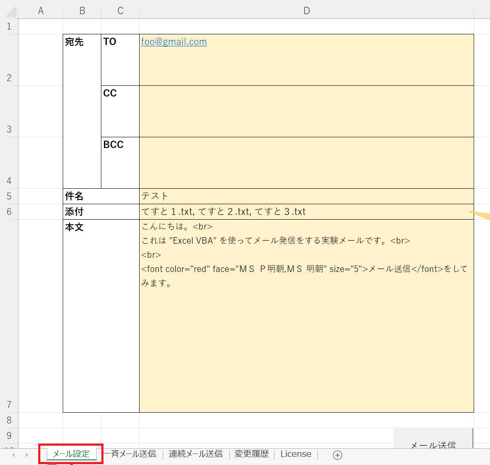

Excel VBA から Outlook を操作してメール送信の自動化に挑戦します。
リストに用意されている送信先に一斉にメールを送信したり、個々の宛先に連続して送信したり、複数のファイルを添付するなどの方法を実際にやってみたいと思います。
まずは基本となる、Excel ワークシートに設定された情報に従って Outlook からメール送信するマクロを作成してみます。
| Excel : | 2021 MSO 64 ビット, | バージョン 2212 ビルド 16.0.15928.20196 |
| OS : | Windows11 home, | 22H2 |
1. [メール設定] というシートに基本となる表を作成します。添付ファイルは作成するブックと同じフォルダーに保存しておきます。

2. "Visual Basic Editor (VBE)" の「挿入」メニューから「標準モジュール」をクリックし、標準モジュールを追加します。コードウィンドウに下記コードを記述します。
[メールを送信するコード]
' win32 MessageBoxA を使うための宣言
Declare PtrSafe Function MessageBox Lib "User32.dll" Alias "MessageBoxA" (ByVal hWnd As Long, ByVal lpText As String, ByVal lpCaption As String, ByVal uType As Long) As Integer
Const MB_OK As Long = &H0
Const MB_OKCANCEL As Long = &O1
Const MB_YESNO As Long = &O4
Const MB_ICONHAND As Long = &O20
Const MB_ICONSTOP As Long = &O20
Const MB_ICONERROR As Long = &O20
Const MB_ICONQUESTION As Long = &O40
Const MB_ICONEXCLAMATION As Long = &O30
Const MB_ICONINFORMATION As Long = &O40
Const IDOK As Long = &O0
Const IDCANCEL As Long = &O1
Const IDABORT As Long = &O2
Const IDYES As Long = &O6
Const IDNO As Long = &O7
Const MB_TOP As Long = &H40000
Sub メール送信()
Dim ol As Outlook.Application
Dim ml, sh
' 連続送信すると、ウェイトを入れないと CreateObject("Outlook.Application") を失敗することがあるようです。
Application.Wait [Now() + "00:00:00.1"]
Set ol = CreateObject("Outlook.Application")
Set sh = Sheets("メール設定")
Set ml = ol.CreateItem(0)
With ml
If sh.Range("D2").Value = "" Then
MsgBox "TO が空欄です。この項目を無視します。", vbOKOnly + vbCritical, "確認"
Exit Sub
End If
' 基本情報
.BodyFormat = 2 ' 1: Text, 2: HTML, 3:リッチテキスト
.To = sh.Range("D2").Value
.Cc = sh.Range("D3").Value
.Bcc = sh.Range("D4").Value
.Subject = sh.Range("D5").Value
' 署名 を退避。後述の .HtmlBody で戻します。
.Display ' "署名" を signatureString へコピーするために一旦メールを表示する必要があるようです。
signatureString = .HtmlBody
' 添付ファイル
If sh.Range("D6").Value <> "" Then
Dim v, i
v = Split(sh.Range("D6").Value, ", ")
For i = LBound(v) To UBound(v)
.Attachments.Add ThisWorkbook.Path & "\" & v(i)
Next i
End If
' 補足： .BodyFormat でどれを選択していても、ここで .HtmlBody を使うと強制的に HTML 形式へ変更されるようです。
.HtmlBody = "<div style=""font-family:游ゴシック; font-size:11pt;"">" & sh.Range("D7").Value & "</div>" & signatureString
Application.Wait [Now() + "00:00:00.5"]
' メール送信確認
' メッセージボックスを最上位（トップモスト）表示したいので、Win32 の MessageBoxA を使用します。
ret = MessageBox(0, "メール送信しますか？", "確認", MB_YESNO + MB_ICONQUESTION + MB_TOP)
If ret = IDYES Then
.Send
Else
.Delete
End If
' こちら、VBA版の MsgBox による確認ダイアログです。
' If MsgBox("メール送信しますか？", vbYesNo + vbQuestion + vbMsgBoxSetForeground + vbDefaultButton2, "確認") = vbYes Then
' .Send
' Else
' .Delete
' End If
End With
' オブジェクトを開放
Set ml = Nothing
Set ol = Nothing
Set sh = Nothing
End Sub
3. ［メール送信］ボタンを追加
［メール送信］ボタンを追加して、クリックしたら上記で作成したマクロ "メール送信" を実行するようにします。
[メール送信] ボタンをクリックすると、下図のように表示されます。
確認ダイアログで［はい(Y)］をクリックすればメール送信されますし、［いいえ(N)］をクリックすればメールは送信されません。
送信前に確認できるので安心ですね。プログラム完成度が高くなって信頼できるようになったら、場合によっては確認無しでメール発信するようにプログラム修正もできますね。
重要
再度の注意です。
添付するファイルは Excel ファイルと同じフォルダへ事前に保存しておいてください。ファイルが無い場合は VBA の実行時エラーとなります。
メール送信する基本を理解できたので、次はリストにある宛先へ同じ内容のメールを一斉送信マクロに挑戦してみます。
マクロ一回の実行で送信するメールは１通です。
メールの宛先として、Excel のリストにある全てのメールアドレスを設定して送信します。
| Excel : | 2021 MSO 64 ビット, | バージョン 2212 ビルド 16.0.15928.20196 |
| OS : | Windows11 home, | 22H2 |
1. [一斉メール送信] というシートを作成します。下図が作成例です。
2. 以下のコードを "一斉メール送信" のオブジェクトへ記載します。
["一斉メール送信" のコード]
Sub 一斉メール送信()
Dim i, sh
Dim wrkTo, wrkCc, wrkBcc
Set sh = Sheets("メール設定")
' To list 作成
For i = 5 To Cells(Rows.Count, "C").End(xlUp).Row
wrkTo = wrkTo & Cells(i, "C").Value & ";"
Next i
' Cc list 作成
For i = 5 To Cells(Rows.Count, "D").End(xlUp).Row
wrkCc = wrkCc & Cells(i, "D").Value & ";"
Next i
' Bcc list 作成
For i = 5 To Cells(Rows.Count, "E").End(xlUp).Row
wrkBcc = wrkBcc & Cells(i, "E").Value & ";"
Next i
sh.Range("D2").Value = wrkTo
sh.Range("D3").Value = wrkCc
sh.Range("D4").Value = wrkBcc
Call メール送信
End Sub
3. ［一斉メール送信］のボタンをシートへ追加し、これをクリックすることで上記マクロを実行するように設定します。
ボタンをクリックしてマクロを実行すると、下図のような表示となりました。
一斉メール送信の次は、複数の宛先へ１つずつ同じ内容のメールを発信するマクロに挑戦してみます。
例えば「とても大勢に同じメールを送信したいが、BCC ではなく TO で送りたい。ただし誰にメール送信したのかを相互に知られないように送りたい。」というシチュエーションを想定しています。
BCCで送信すると、後日その送信履歴を確認しても誰に送信したのかわからず困ってしまった、ということが私自身ありました。TO で送りたいと思いました。
またあまりに多くの人へ１つのメールで送信すると、システムやメールソフト制限で送付できない、ということがあります。
同じメールを複数のメールに分けて自動送信してくれるマクロは、多くの場面で有益に活用できるかもしれません。
| Excel : | 2021 MSO 64 ビット, | バージョン 2212 ビルド 16.0.15928.20196 |
| OS : | Windows11 home, | 22H2 |
1. [連続メール送信] というシートを作成します。下図が作成例です。
2. 以下のコードを "連続メール送信" のオブジェクトへ記載します。
["連続メール送信" のコード]
Sub 連続メール送信()
Dim i, wrk, sh
Set sh = Sheets("メール設定")
For i = 5 To Cells(Rows.Count, "C").End(xlUp).Row
sh.Range("D2").Value = Cells(i, "C").Value
sh.Range("D3").Value = Cells(i, "D").Value
sh.Range("D4").Value = Cells(i, "E").Value
Call メール送信
Next i
MsgBox "全てのメール送信を完了しました。", vbOKOnly + vbInformation, "完了"
End Sub
3. ［連続メール送信］のボタンをシートへ追加し、これをクリックすることで上記マクロを実行するように設定します。
[連続メール送信] ボタンをクリックした様子を下図動画で紹介します。
[動作例]
確認ダイアログで確認するのが面倒ですが、それでもずいぶん楽になりました。プログラムをある程度信用できるようになったら、確認無しで送信するようにプログラム修正しても良いかもしれません。なお、くれぐれも自己責任で。
サンプルプログラム ダウンロード
本ページの情報は、特記無い限り下記 MIT ライセンスで提供されます。
| 2022-01-29 | - | 新規作成 |